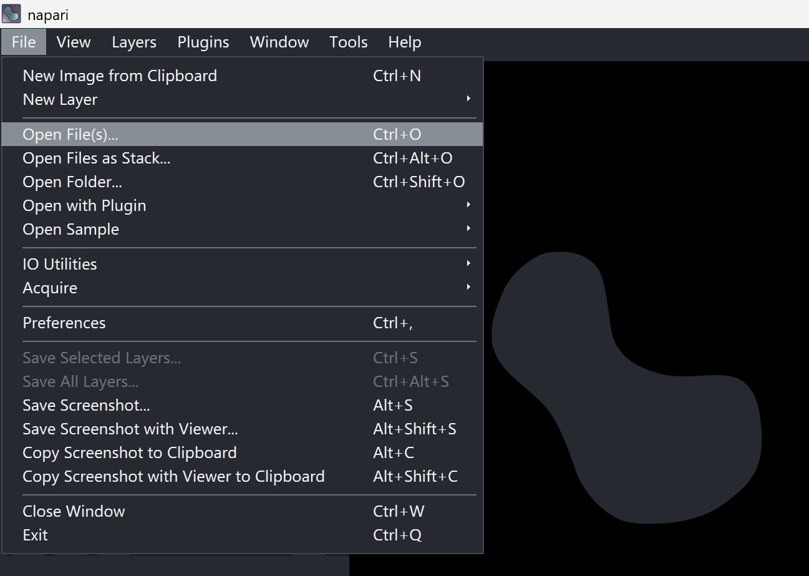
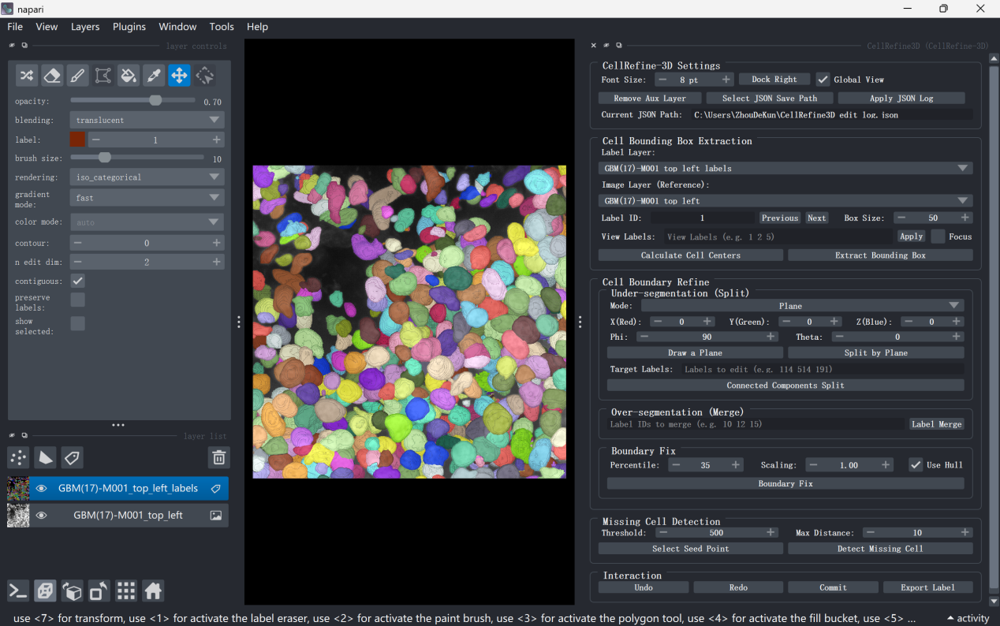
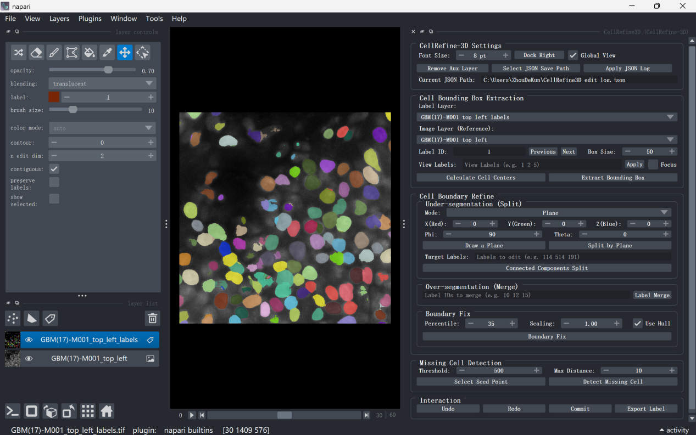

napari 基本操作¶
本节介绍使用 NuPatch3D 过程中所需的 napari 基本操作。有关 napari 的完整功能和详细使用说明，请参阅 napari 官方文档。
1.1 安装与启动¶
如尚未安装 napari，请在目标 Python 环境中运行以下命令（注意：本插件针对 napari 0.6 版本进行了适配和测试，其他版本可能存在兼容性问题）：
pip install "napari[all]"
napari
启动成功后将打开 napari 主窗口。
1.2 数据加载¶
启动 napari 后，可通过菜单栏 File → Open Files 加载 TIFF 格式的原始荧光图像和预分割标签图像（见图 1）；也可直接将配对的 TIFF 文件拖拽至 napari 窗口中完成加载。
加载成功后，左侧图层面板中将显示以下两个图层：
- Image：原始荧光图像
- Labels：预分割标签图像
注意
NuPatch3D 需要同时加载原始荧光图像（TIFF）和预分割标签图像（TIFF）。缺少任一文件均无法正常使用插件功能。

1.3 视图¶
二维/三维视图切换¶
点击画布左下角的 2D / 3D 按钮，可在二维切片视图和三维体渲染视图之间切换。
切片浏览¶
在二维视图下，拖动底部或左侧的 Z / Y / X 滑块，可逐层浏览不同切片。
三维视图操作¶
切换至三维视图后：
- 按住鼠标左键并拖动，可旋转视角；
- 滚动鼠标滚轮，可缩放视图。
提示
提取细胞邻域后，建议先在三维视图中旋转观察目标细胞及其邻域结构，确认分割质量后再进行局部编辑。有关具体操作流程，请参阅 NuPatch3D 的基本操作。


1.4 标注工具¶
napari 提供多种原生标注工具，可通过界面左上角工具栏选择，也可使用快捷键切换。
| 工具 | 快捷键 | 功能 |
|---|---|---|
| 画笔（Paint） | P | 在标签图层（Labels）上绘制前景标签 |
| 橡皮擦（Erase） | E | 擦除已标注的体素 |
| 填充（Fill） | F | 填充连通区域 |
注意
使用标注工具前，请确保当前选中的是 Labels 图层，而非 Image 图层。
napari 原生标注操作支持 Ctrl+Z 撤销。
NuPatch3D 的局部编辑功能与上述原生工具完全兼容。例如，可先使用橡皮擦去除错误桥连，再执行插件的连通域重标号功能修复欠分割问题（参见 欠分割修复）；也可在边界缺失区域使用画笔补全标签后，再调用密度约束边界修复功能（参见 边界修复）。
包括napari的原生标注工具在内的所有标注操作均会被纳入 NuPatch3D 的统一编辑历史管理机制，并记录到 JSON 操作日志中。用户可通过插件提供的撤销、重做和恢复功能，实现体素级编辑过程的回溯与复原。有关详细说明，请参阅 恢复结果。
1.5 图层管理¶
常用图层管理操作如下：
- 显示/隐藏图层：点击图层列表（Layer List）中图层名称左侧的眼睛图标。
- 调整透明度：拖动图层属性面板中的 Opacity 滑块。
- 删除图层：选中目标图层后，点击图层列表底部的垃圾桶图标。
NuPatch3D 提取局部编辑区域后，会自动创建以下图层：
原图名-Crop：局部原始图像；原图名-LabelFix：局部标签图像。
用户可通过 Global View 开关切换全局视图和局部视图，从而聚焦当前编辑区域，避免误修改其他细胞。有关详细说明，请参阅 NuPatch3D 的基本操作。
提示
本章仅介绍使用 NuPatch3D 所需的 napari 基础功能。有关多通道图像、时间序列数据、插件系统等高级特性，请参阅 napari 官方文档。